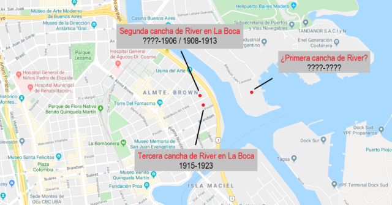
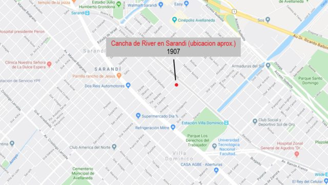
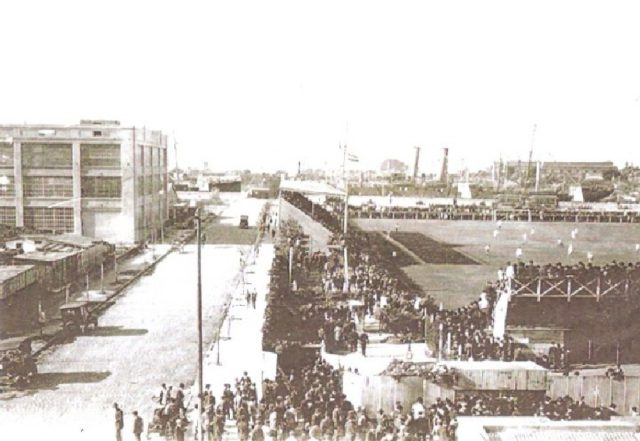
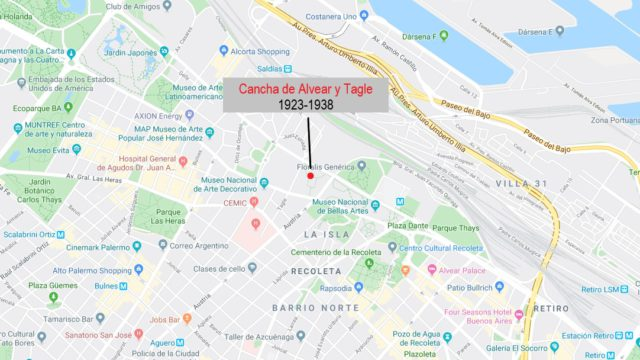
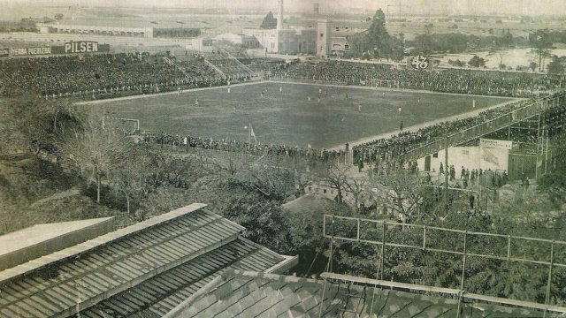

Cancha de River Plate
1) La primera cancha de River se encontraba ubicada en la Dársena Sur Este (Isla Demarchi), cerca de las carboneras Wilson. Sobre esta cancha no hay información fidedigna. No se sabe cuando comenzó a utilizarla ni cuando se trasladó al sector opuesto de la Dársena Sur. Para el año 1904 el club River ya disputaba sus partidos en la cancha que se encontraba ubicada en la manzana delimitada por las calles Pedro de Mendoza, Villafañe, Gaboto y Aristobulo del Valle, en la zona de la Dársena Sur Oeste (La Boca). Utilizo este campo de juego hasta el año 1906.
2) River Plate es forzado a abandonar el predio de Dársena Sur y traslada su campo de juego a la localidad de Sarandí, en las cercanías del arroyo homónimo. En esta ubicación se establece solo por un año (1907).
3) En 1908 vuelve al predio de Dársena Sur (ver primer mapa), lugar que ocupa hasta el año 1913, cuando nuevamente es forzado a dejar los terrenos. Para el siguiente torneo debe alquilar la cancha de Ferro Carril Oeste para disputar sus partidos como local.
4) En el año 1915 inaugura su nueva cancha, en un predio contiguo al que ocupara anteriormente, en la zona de la Dársena Sur (ver primer mapa). Esta será su ultimo campo de juego en el barrio de La Boca.

5) En el año 1923 River Plate abandona para siempre el barrio que lo vió nacer. El 20 de mayo de 1923 inaugura su nuevo estadio en Alvear (hoy Avenida del Libertador) y Tagle, en el barrio de Recoleta